Basic HTML
This assignment focused on learning the structure of HTML documents and using semantic elements correctly.
View AssignmentIn this course, I will learn how to design and style the front end of websites using HTML and CSS, enhance functionality through JavaScript, and apply server-side development techniques to store and retrieve data efficiently.
This assignment focused on learning the structure of HTML documents and using semantic elements correctly.
View Assignment
This assignment introduced CSS styling techniques such as colors, fonts, spacing, and layout control.
View Assignment
This assignment explored creating responsive layouts using Flexbox and media queries.
View Assignment
This assignment involved recreating a given webpage layout and style using only HTML and CSS.
View Assignment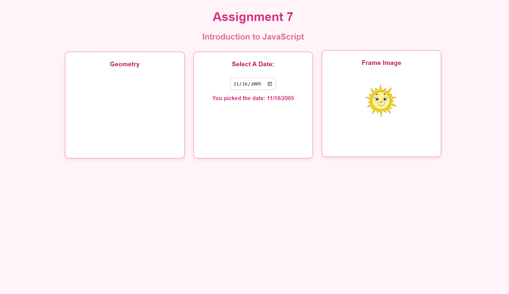
This assignment introduced JavaScript basics, including variables, functions, and DOM manipulation.
View Assignment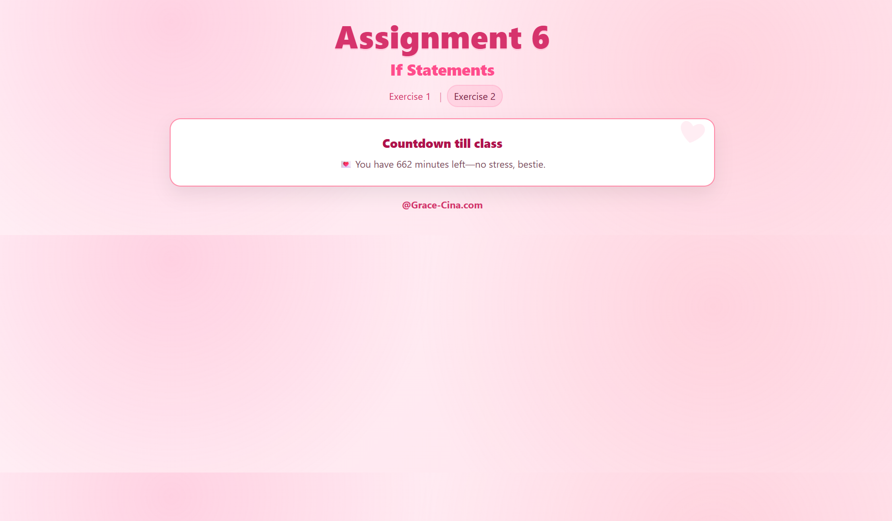
This assignment demonstrates the use of JavaScript if statements to create an interactive slider and a real-time countdown that show different messages depending on how much time is left until class.
View Assignment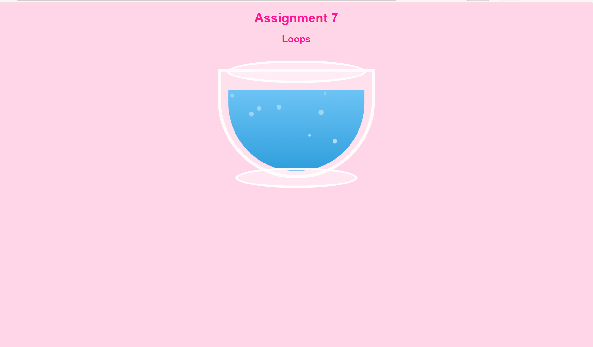
This assignment uses CSS art and JavaScript to create an animated fishbowl with bubbles generated in random positions using a loop.
View Assignment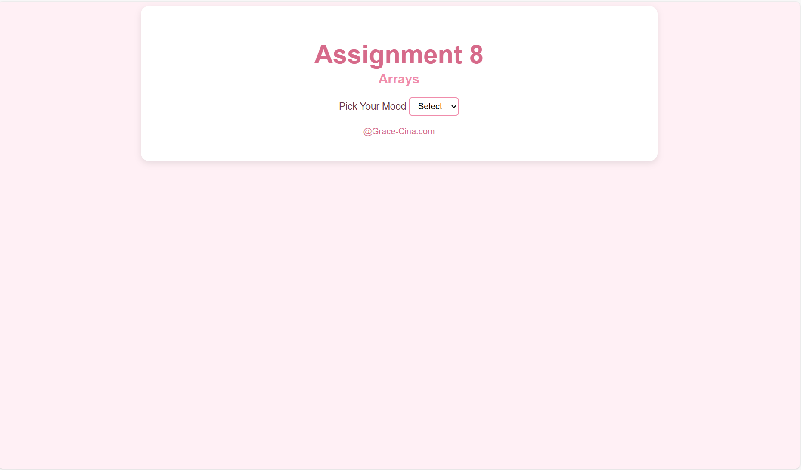
This assignment uses JavaScript associative arrays to display songs based on a selected mood. When a mood is chosen, a list of songs appears, and clicking a song shows an embedded YouTube video of that song.
View Assignment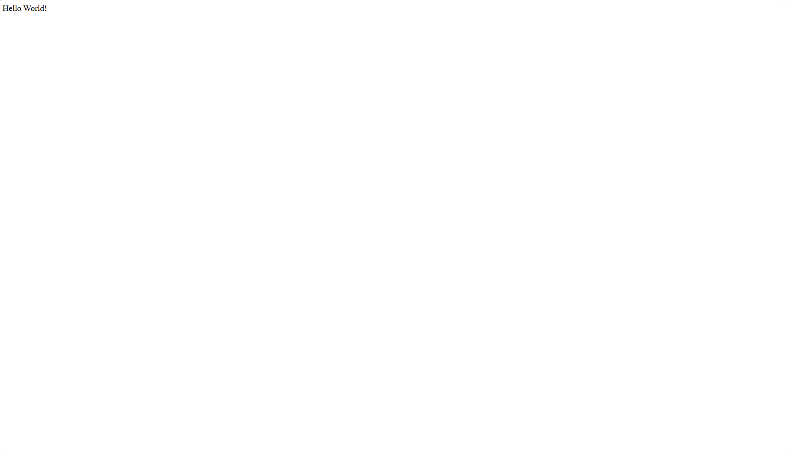
This assignment creates a simple Node.js “Hello World” web server, pushed to GitHub and deployed on Render.
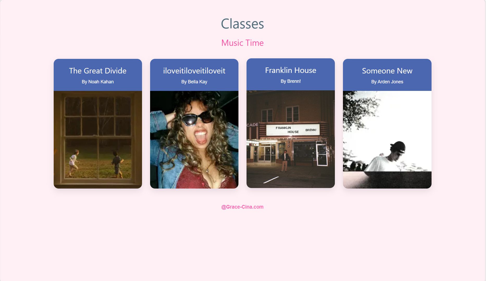
This project uses JavaScript classes to dynamically create a pink-themed music gallery where clicking a song opens a modal with details and an embedded YouTube video.

This project outlines my selected topic and initial design ideas for the final course project.
View Project
This project presents wireframes and mockups for the final course project.
View Project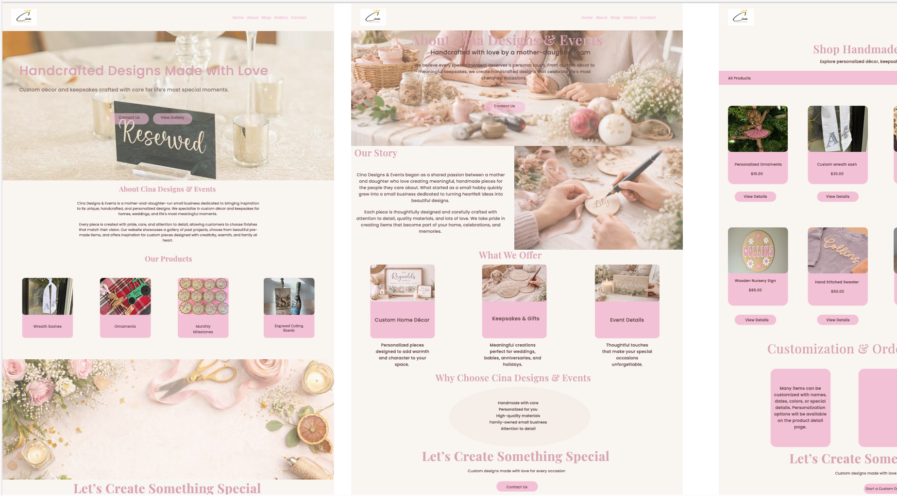
This project showcases the completed final course project, including all implemented features and design elements.
View Project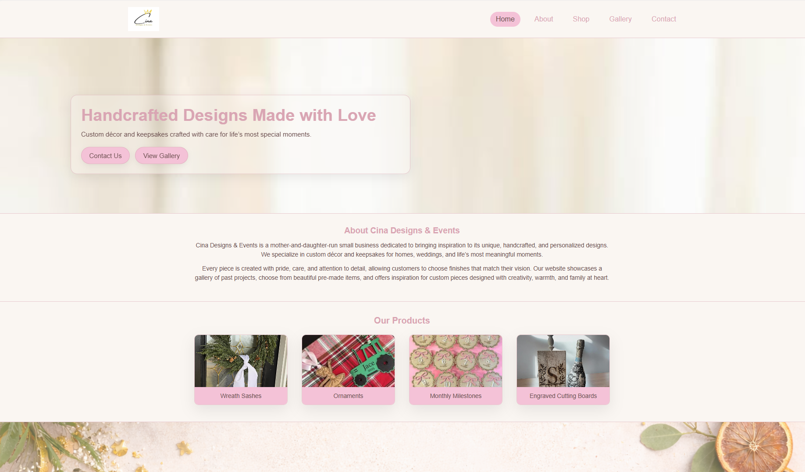
Build a responsive homepage from your wireframe using HTML and CSS that matches the design across all screen sizes.
View Project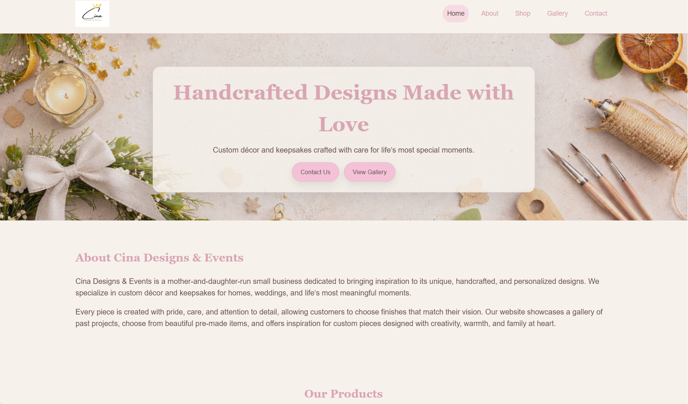
Created a multi-page website using HTML and CSS with consistent styling, navigation, and responsive layout for a small business.
View Project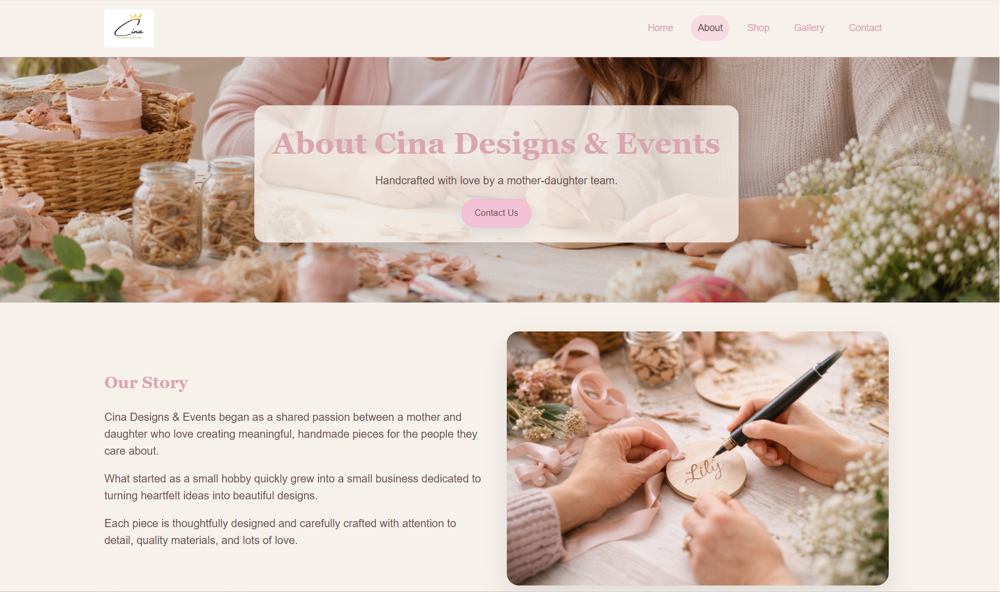
Final version of my project including feedback revisions, responsive fixes, toggle navigation, and a lightbox feature.
View Project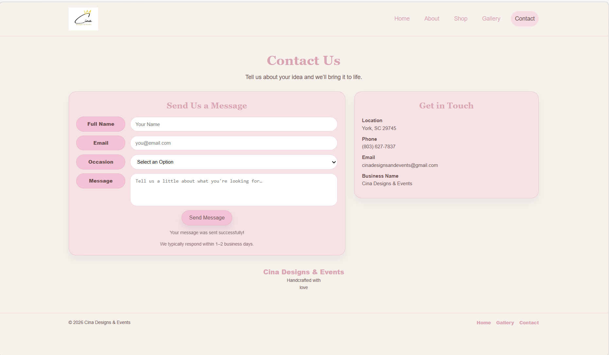
This project adds dynamic JSON data loading, a working contact form that sends emails, and a responsive embedded map using an iframe.
View Project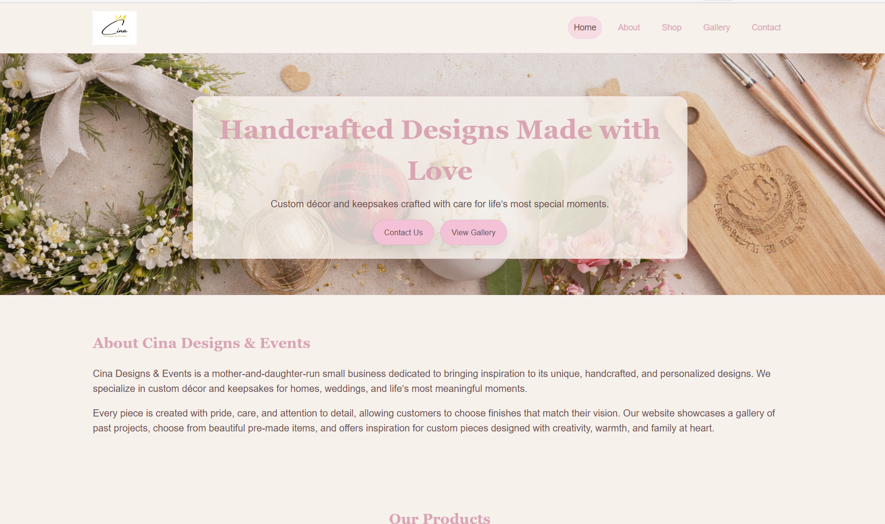
This project converts my Cina Designs & Events website into a fully functional React site using reusable components, multiple pages, responsive design, a mobile toggle menu, and a gallery lightbox feature.